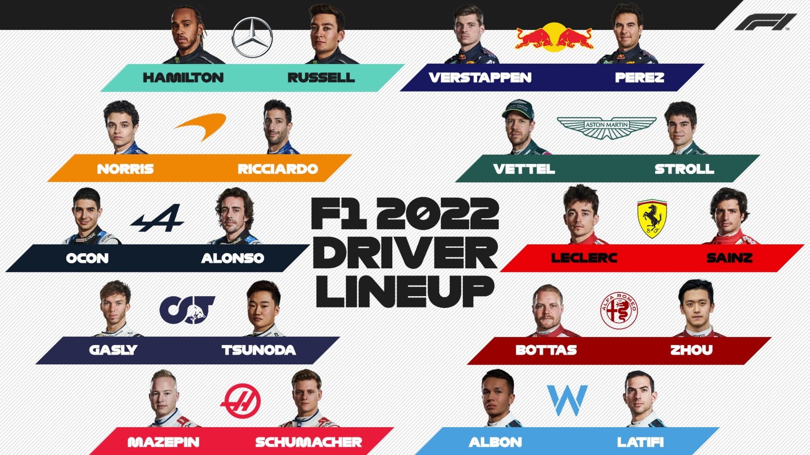

17 November 2021 - With a brand new set of rules, a change in the car design, and the introduction of Miami in the calendar, the upcoming 2022 season that starts in a few weeks is set to be an exciting one. And with it comes a mix in the driver lineup that includes old and new faces. After 2007 world champion Kimi Räikkonen announced his retirement in September 2021, that move left a spot in the Alfa Romeo garage for the following year and triggered the lineup mix. Here’s how the teams will look for 2022:
Former Mercedes driver Valtteri Bottas will be joining Alfa Romeo for 2022. The Finn, who drove alongside 7-time world champion Lewis Hamilton for 5 seasons from 2017 to 2021, will be the man replacing Räikkonen’s seat in the garage. Alongside him is Zhou Guanyu, the grid’s only rookie for the season who graduates from Formula 2 and will become China’s first ever full-time Chinese F1 driver.
Bottas’ move meant that the Brackley based Mercedes team was lacking a driver, and the prestigious seat has been left out for none other than Mercedes junior George Russell. His long awaited debut comes after 3 struggling seasons with Williams. This season however has seen a resurgence for the Williams team after a pointless 2020 season, scoring multiple points finishes and a podium in Belgium with Russell himself. He will be paired with fellow Brit Lewis Hamilton, who signed a contract extension until 2023.
And with George Rusell leaving the Williams team this year, a new position has opened that will be given to former Red Bull driver Alex Albon. The Thai driver, who achieved 2 podiums in his 2 years with Toro Rosso (now known as AlphaTauri) and Red Bull from 2019 and 2020, was demoted to a reserve driver for 2021. However, he now comes back to replace close friend Russell and drive alongside Canadian Nicholas Latifi.

The rest of the teams chose to retain their 2021 lineup. Red Bull will have champion Max Verstappen and Mexican driver Sergio Perez, Ferrari will drive with Spaniard Carlos Sainz and Monégasque Charles Leclerc, and McLaren will retain young Brit Lando Norris and Australian Daniel Ricciardo.
Meanwhile, Alpine will have former world champion Fernando Alonso and recent race winner Esteban Ocon, AlphaTauri will go with French driver Pierre Gasly and Japanese Yuki Tsunoda, and Aston Martin will drive with 4-time world champion Sebastian Vettel and Canadian Lance Stroll. The last team, American based Haas, will retain 2021 rookie Mich Schumacher and controversial figure Nikita Mazepin. They are both aiming for their first points in the sport.
See also: Everything you have to know for the upcoming 2022 season
